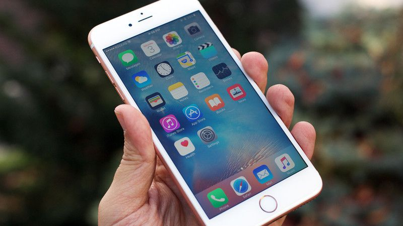

Apple sells its billionth iPhone
July 27, 2016: 4:54 PM ET
by Seth Fiegerman
Welcome to the billion device club, Apple.
Apple announced the sale of its billionth iPhone on Wednesday, nine years after the smartphone first went on sale.
"We never set out to make the most, but we've always set out to make the best products that make a difference," Apple CEO Tim Cook said at an employee meeting on Wednesday, according to a statement. "Thank you to everyone at Apple for helping change the world every day."
The milestone is a reminder of the nearly unprecedented reach and success of the iPhone.
The iPhone catapulted Apple (AAPL, Tech30) to become the most valuable business in the world and continues to account for the majority of Apple's revenue.
But the announcement comes one day after Apple reminded the world that the iPhone magic is fading.
Apple sold 40.4 million iPhones in the quarter ending in June, down from 48 million a year earlier, according to its latest earnings report. That marks the second straight quarter of sales declines.
Customers are taking longer to upgrade their phones. Many analysts have raised concerns that the global smartphone market is saturated. And overall sales in China, touted as Apple's next big market, fell by a third from the previous year.
Cook admitted on a conference call with analysts that Apple was caught off guard by the slower rate of customers upgrading to the iPhone 6S, which was released last fall. "Maybe that was a predictable thing, although we didn't predict it in the beginning," he said. "It took us a little time to realize that."
All eyes are now on the next iPhone launch this fall to reinvigorate sales.
Apple will reportedly break with its usual strategy of overhauling the iPhone every two years. The next generation iPhone is expected to ditch the headphone jack, but otherwise only receive small tweaks compared to the models on the market.
If Apple can't keep growing the market for the iPhone, it will need to find another product with the potential to hit the billion mark.